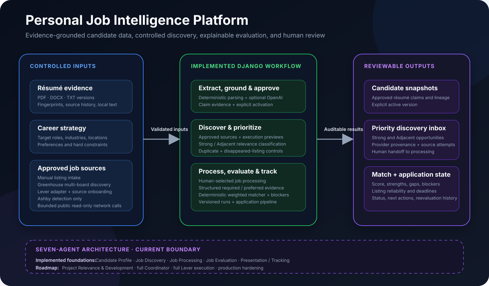
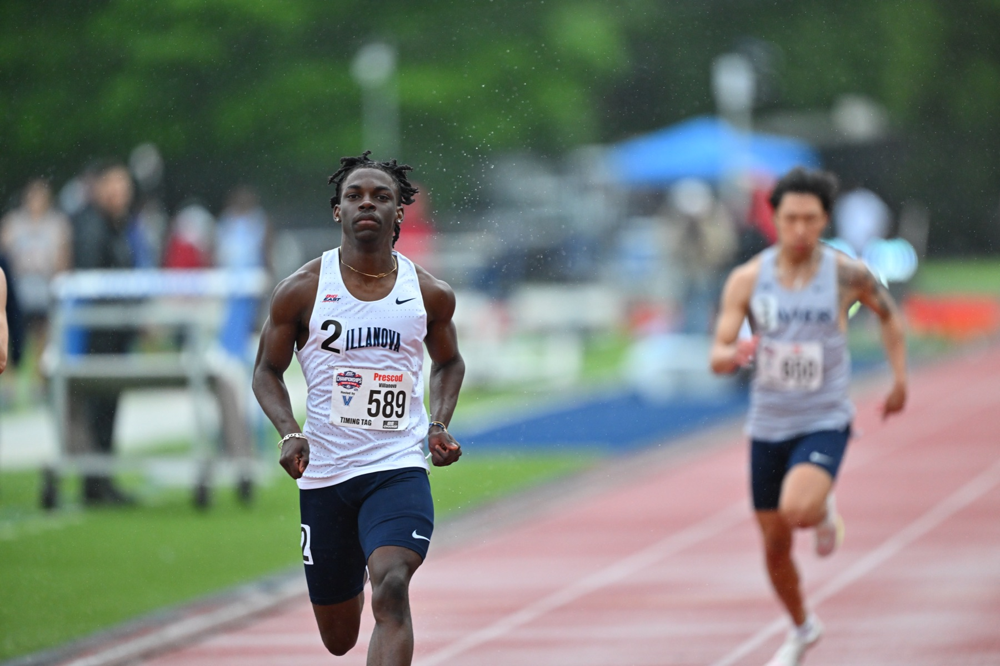
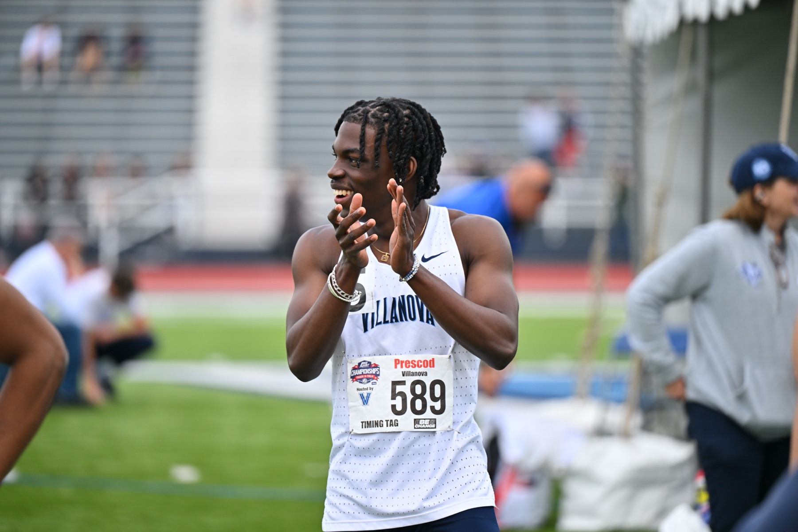

12 documented engineering projects
Embedded and biomedical systems engineer
I build sensing, embedded, and software systems that carry real-world data from hardware through analysis and usable tools.

Engineering across the system
The work spans the sensor, the device, the application, and the data path.
- Embedded systemsESP32 development, real-time control, peripheral integration, and hardware-software coordination.
- Biomedical sensingfNIRS, heart rate and SpO₂ sensing, IMUs, signal acquisition, and wearable prototypes.
- Software and dataPython, mobile and web development, computer vision, data processing, and applied AI.

Selected engineering projects
Each case study shows the architecture, implementation boundary, validation status, and next engineering step.
Monitors wearable sensor data
An ESP32 prototype for heart rate, SpO₂, motion, and safety workflows.

Organizes track training
A cross-platform athlete-and-coach system with privacy-scoped access and four training domains.

Matches roles to evidence
An evidence-grounded Django workflow for discovery, matching, and human review.
Working method
Hardware integration, signal acquisition, software, and data analysis have to work as one system before a prototype becomes a useful tool.
Engineering background
B.S. Electrical Engineering, M.S. Biomedical Engineering candidate, Computer Science minor, and Villanova Track & Field student-athlete.

